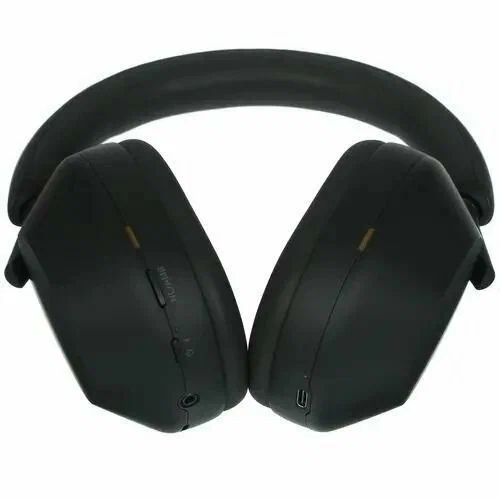

Sony WH-1000XM5 — полноразмерные беспроводные наушники с лучшим в классе шумоподавлением. Лёгкая конструкция, мягкие амбушюры и до 30 часов автономной работы. Поддержка кодеков LDAC и функция мультиподключения.
Sony WH-1000XM5 — эталонные полноразмерные беспроводные наушники для тех, кто ценит качество звука и тишину. Восемь микрофонов и два специализированных процессора обеспечивают шумоподавление, подстраивающееся под конкретный тип шума в реальном времени. Поддержка кодека LDAC позволяет передавать музыку в качестве, близком к Hi-Res Audio, по беспроводному соединению. Soft-fit амбушюры из синтетической кожи равномерно распределяют давление и не утомляют уши даже при многочасовом использовании. Функция Speak-to-Chat автоматически ставит музыку на паузу, когда вы начинаете говорить. Мультиподключение позволяет одновременно быть подключённым к двум устройствам — например, к ноутбуку и смартфону. Автономность — до 30 часов, а быстрая зарядка за 3 минуты даёт 3 часа воспроизведения.
© Click Store. Все права защищены.